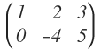
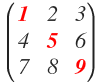

concepto y clasificación de Matrices
objetivo
Esta página web tiene como objetivo dar a conocer qué es una matriz, así como todos los conceptos relacionados con las matrices, lo que te ayudará a entender mejor todas las explicaciones sobre cálculo con matrices. Además, veremos también los tipos de matrices que existen.
concepto de matriz
¿QUÉ ES UNA MATRIZ?
Una matriz es un conjunto de números ordenados en filas y columnas.
Las matrices tienen por nombre una letra mayúscula y sus elementos se encierran entre dos paréntesis (o dos corchetes).
Decimos que una matriz es de orden m x n (o de dimensión m x n ) cuando tiene m filas y n columnas.
Ejemplo de matriz:
clasificación de matrices
Matriz rectangular
Es aquella que tiene distinto número de filas que de columnas (m≠n):
Matriz fila
Es toda matriz rectangular que tiene una sola fila (m = 1).
Matriz columna
Es toda matriz rectangular con una columna (n = 1).
Matriz opuesta
La matriz opuesta a otra matriz es la que tiene todos los elementos de signo contrario a la matriz original. Por ejemplo, si tenemos la matriz A:
Su matriz opuesta sería:
La matriz opuesta a A se designa como -A, donde que todos los elementos son de signo contrario a los elementos de la matriz A.
Matriz traspuesta
Se llama matriz traspuesta de una matriz cualquiera de dimensión m x n a la matriz que se obtiene al convertir las filas en columnas. Se representa con el superíndice «t»y su dimensión es por tanto n x m.
Por ejemplo, tenemos la siguiente matriz A, de dimensión 2 x 3 (2 filas y 3 columnas):

Su matriz traspuesta, designada con el superíndice «t», se obtiene convirtiendo las filas en columnas. Por tanto, la primera fila de la matriz A, formada por los elementos 1, -3 y 0, pasa a ser la primera columna de su matriz traspuesta. De la misma forma, la segunda fila de la matriz A, formada por los elementos 2, 4 y 1, pasa a ser la segunda columna de su matriz traspuesta:
La dimensión de la matriz traspusta de A es de 3 x 2 (3 filas y 2 columnas):
Matriz cuadrada de orden n
Una matriz cuadrada es aquella que tiene igual número de filas que de columnas (m = n). En este caso, la dimensión se denomina orden, cuyo valor coincide con el número de filas y de columnas.
Por ejemplo, la siguiente matriz es una matriz cuadrada de orden 3, ya que tiene 3 filas y 3 columnas:
Entre los elementos de las matrices cuadradas suelen tenerse muy en cuenta los que forman las diagonales de la matriz.
Así, se llama diagonal principal de una matriz cuadrada a los elementos que componen la diagonal que va desde la esquina superior izquierda, hasta la esquina inferior derecha:
Se llama diagonal secundaria de una matriz cuadrada a los elementos que componen la diagonal que va desde la esquina superior derecha, hasta la esquina inferior izquierda:

Matriz triangular superior
Es toda matriz cuadrada donde al menos uno de los términos que están por encima de la diagonal principal son distintos de cero y todos los términos situados por debajo de la diagonal principal son ceros:
Normalmente, cuando se dice que hay que triangular la matriz, se refiere a que hay que hacer ceros los elementos que quedan por debajo de la diagonal principal.
Matriz triangular inferior
Es toda matriz cuadrada donde al menos uno de los términos que están por debajo de la diagonal principal son distintos de cero y todos los términos situados por encima de la diagonal principal son ceros:
Matriz diagonal
Es toda matriz cuadrada en la que todos los elementos que no están situados en la diagonal principal son ceros:
Matriz escalar
La matriz escalar es toda matriz diagonal donde todos los elementos de la diagonal principal son iguales:
Matriz identidad
Es la matriz escalar cuyos elementos de la diagonal principal valen uno, es decir, la diagonal principal está formada por 1, y el resto de los elementos son 0:

Matriz nula
La matriz nula donde todos los elementos son cero. Suele designarse con un 0: